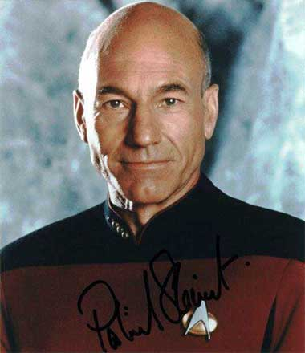
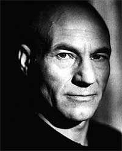
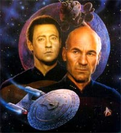

|
por
Fernando Penteriche
Na data de 28 de setembro de 1987,
em "Encounter at Fairpoint", foi apresentado
aquele que seria o sucessor de Kirk --o principal personagem da
nova gerao de Jornada nas Estrelas e um dos principais
de toda a histria do franchise. Jean-Luc Picard.

Quando a primeira procura pelos atores que iriam compor o elenco
da Nova Gerao comeou, em 10 de dezembro de 1986, essa
foi a descrio do novo capito que foi enviada s agncias
de talentos:
"Capito Julien Picard - Um homem caucasiano com
aproximadamente 50 anos, em boa forma fsica. Nascido em Paris,
seu sotaque francs apenas pode ser identificado em momentos de
emoes mais fortes. Ele definitivamente um romntico e
acredita fortemente no sentido de dever e honra. Sua voz deve ser
rica e forte, pois ele um bom orador. O capito Julien comanda
a Enterprise."
A histria de fundo para Picard, criada antes mesmo do nicio da
pr-produo da Nova Gerao, dava ele a descendncia
francesa em homenagem ao explorador Jacques Cousteau. O nome foi
uma homenagem ao oceangrafo francs Jacques Piccard. Tambm o
fato de "Julien" Picard ter comandado a USS Stargazer j
estava presente.
Seu primeiro nome (assim como o sobrenome de William Riker, que at
este ponto era Ryker) tomou a forma definitiva aps uma reviso
dos roteristas ocorrida entre 4 de fevereiro e 23 de maro de
1987. Aps mudarem o nome de Picard para Jean-Luc, os roteiristas
decidiram que ele teria o apelido de "Luke" durante a srie.
Felizmente esse conceito foi revisto a tempo de no colidir com
outro famoso Luke, o Skywalker.
 Patrick
Stewart ganhou o papel aps forte recomendao de Robert
Justman, veterano da Srie Clssica e supervisor de produo
da Nova Gerao at o final do primeiro ano, que conhecia seu
trabalho no teatro. O mais interessante que Roddenberry e
outros membros da equipe de produo j conheciam Patrick
Stewart, e at cogitavam ele no papel de Data!
Com Patrick Stewart escolhido para interpretar Jean-Luc Picard e
com o restante do elenco j escolhido, a Nova Gerao
estreou em 1987. Nunca uma srie de Jornada dependeu tanto
de um nico personagem como a Nova Gerao dependeu de
Picard. Ele foi a espinha dorsal da srie e de seus trs filmes
para cinema.
Picard tem alguns detalhes que o identificam. A famosa
"manobra Picard", aquela ajeitadinha no uniforme, ou sua
bebida preferida, o ch Earl Grey, alm de frases como "Engage!"
ou "Make it so". Sua personalidade (como j foi
exaustivamente comentada) diferente da de Kirk, sendo Picard um
homem de conversa e no de ao. Talvez no de ao como
Kirk, mas em episdios como "Starship Mine" o
vemos como um legtimo Bruce Willis em "Duro de Matar".
Melhores episdios
Uma listinha rpida de bons episdios nos quais Picard o foco
central. Vou listar apenas do quarto ano para frente, por causa da
exibio atual dos episdios da Nova Gerao:
4 ano - "The Best of Both Worlds II", "Family",
"Reunion" (gosto da presena marcante de Picard
com os Klingons)
5 ano - "Darmok", "Unification",
"I, Borg" (Picard tendo que lidar novamente com
Borgs foi marcante), "The Inner Light" (super-clssico)
6 ano - "Chain of Command" (Talvez a melhor
atuao individual de um ator em toda a Nova Gerao aconteceu
aqui com Patrick Stewart), "Tapestry" (esse
talvez o melhor episdio com Q de toda a srie), "Starship
Mine", "Lessons".
7 ano - "Gambit", "Attached", "All
Good Things"
 Em
uma srie com personagens pouco explorados, o Picard de Patrick
Stewart sobrou. Talvez apenas Brent Spiner (Data) tenha feito uma
pequena sombra, mas, sem dvida, ao contrrio da Srie Clssica,
onde Kirk e Spock dividiam as atenes, a Nova Gerao
foi de Picard. E esquea os filmes "First Contact"
e "Insurrection". O verdadeiro Picard est na
telinha, e no na telona.
|